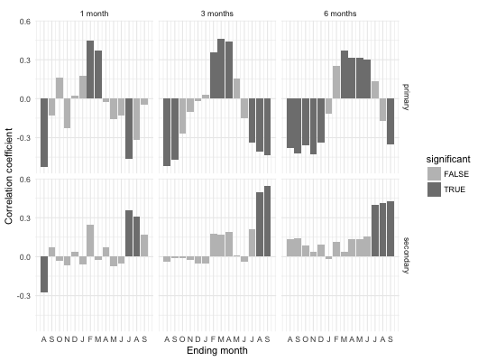

seascorr(chrono, climate, var_names = NULL, timespan = NULL, complete = 9, season_lengths = c(1, 3, 6), primary = 1, secondary = 2, ci = 0.05)
data.frame containing a tree-ring
chronologies, e.g. as obtained by chron of package dplR.data.frame or matrix with
climatic data in monthly resolution, with year, month and
climate parameters in columns (all columns except year and month
will be recognized as parameters for response or correlation
functions), or a single data.frame or matrix in
13-column format (see below), or a (potentially named) list of
one or several of the latter.character vector with variable
names. Defaults to corresponding column names of parameter climate if
given as data.frame, or its names if given as list.integer vector of length 2 specifying the
time interval (in years) to be considered for analysis. Defaults
to the maximum possible interval.integer scalar, month when tree-ring growth
is expected to have finished.numeric vector giving the lengths of
the seasons for variable groupingnumeric or name character of
primary climate variablenumeric or name character
of secondary climate variablenumerical value to set the test level for
significance test (values 0.01, 0.05 and 0.1 are allowed); the
confidence intervals are adapted accordingly.The 'plot' function is used to obtain a plot of the results.
An object of class '"tc_seascorr"' is a list containing at least the following components:
Calculate seasonal correlation with primary and secondary climate variables and tree-ring data, similar to the seascorr function for MATLAB.
This function mimicks the behaviour of the MATLAB function seascorr (Meko et al. 2011), which calculates partial correlations of tree-ring data with a primary and a secondary climatic variable for seasons of different lengths.
Input chronology data can be a data.frame such as produced
by function chron of package dplR. It has to be a
data.frame with at least one column containing the
tree-ring indices, and the corresponding years as rownames.
For climatic input data, there are three possibilities: Firstly,
input climatic data can be a data.frame or matrix
consisting of at least 3 rows for years, months and at least one
climate parameter in the given order. Secondly, input climatic
data can be a single data.frame or matrix in the
style of the original DENDROCLIM2002 input data, i.e. one
parameter with 12 months in one row, where the first column
represents the year. Or thirdly, input climatic data can be a list
of several of the latter described data.frame or
matrices. As an internal format dispatcher checks the
format automatically, it is absolutely necessary that in all three
cases, only complete years (months 1-12) are provided. It is not
possible to mix different formats in one go.
The `complete` parameter specifies the months of the current year in which tree-growth is assumed to finish. This month marks the last month of the first season, and starting from here, 14 different seasons are computed for each specified season length in one-month steps. E.g., for a starting value of 9 (current September) and season length of 3 months, the first season comprises current July to current September, the second season comprises current June to current August, and the last season comprises previous June to previous August. This results in 14 seasons for a given season length. An arbitrary number of season lengths can be specified.
The choice for primary vs. secondary variable can be made either via numeric selection (the integer value 1 stands for the first variable in the supplied climate data set), or by name ("temp", when one of the variables is named "temp"). The correlation of the primary variable with tree-growth is computed as the simple (Pearson) correlation coefficient, while the influence of the secondary variable on tree-growth is computed with the influence of the primary variable on tree-growth removed.
Like in the original seascorr program, the significance of each (partial) correlation is evaluated using exact bootstrapping by circulant embedding of the tree-ring data (Percival \& Constantine, 2006).
Meko DM, Touchan R, Anchukaitis KJ (2011) Seascorr: A MATLAB program for identifying the seasonal climate signal in an annual tree-ring time series. Computers & Geosciences, 37, 1234-1241.
Percival DB, Constantine WLB (2006) Exact simulation of Gaussian Time Series from Nonparametric Spectral Estimates with Application to Bootstrapping. Statistics and Computing 16:25-35
Running for timespan 1950 - 2007...scResults for a season length of 1 month: month type coef significant 1 Aug primary -0.52315707 TRUE 2 Sep primary -0.13106200 FALSE 3 Oct primary 0.16032485 FALSE 4 Nov primary -0.23014606 FALSE 5 Dec primary 0.02495031 FALSE 6 JAN primary 0.17341295 FALSE 7 FEB primary 0.45037057 TRUE 8 MAR primary 0.36968951 TRUE 9 APR primary -0.02386727 FALSE 10 MAY primary -0.16053042 FALSE 11 JUN primary -0.12820088 FALSE 12 JUL primary -0.46359592 TRUE 13 AUG primary -0.31719590 FALSE 14 SEP primary -0.04488525 FALSE 15 Aug secondary -0.27582238 TRUE 16 Sep secondary 0.06979801 FALSE 17 Oct secondary -0.03462244 FALSE 18 Nov secondary -0.06800642 FALSE 19 Dec secondary 0.03601494 FALSE 20 JAN secondary -0.05971148 FALSE 21 FEB secondary 0.24420694 FALSE 22 MAR secondary -0.02486455 FALSE 23 APR secondary 0.07099030 FALSE 24 MAY secondary -0.07426713 FALSE 25 JUN secondary -0.05046446 FALSE 26 JUL secondary 0.36076160 TRUE 27 AUG secondary 0.31129036 TRUE 28 SEP secondary 0.16688381 FALSE Results for a season length of 3 months: month type coef significant 1 Aug primary -0.519372934 TRUE 2 Sep primary -0.472046433 TRUE 3 Oct primary -0.269621872 FALSE 4 Nov primary -0.103296203 FALSE 5 Dec primary -0.018873918 FALSE 6 JAN primary 0.027481833 FALSE 7 FEB primary 0.358586564 TRUE 8 MAR primary 0.459598073 TRUE 9 APR primary 0.443071976 TRUE 10 MAY primary 0.151850972 FALSE 11 JUN primary -0.153003958 FALSE 12 JUL primary -0.338164752 TRUE 13 AUG primary -0.410667091 TRUE 14 SEP primary -0.434304128 TRUE 15 Aug secondary -0.038775439 FALSE 16 Sep secondary -0.013844737 FALSE 17 Oct secondary -0.010596375 FALSE 18 Nov secondary -0.026705049 FALSE 19 Dec secondary -0.055449827 FALSE 20 JAN secondary -0.053018617 FALSE 21 FEB secondary 0.176630042 FALSE 22 MAR secondary 0.167696805 FALSE 23 APR secondary 0.191680777 FALSE 24 MAY secondary 0.007175124 FALSE 25 JUN secondary -0.038708343 FALSE 26 JUL secondary 0.209051084 FALSE 27 AUG secondary 0.493436042 TRUE 28 SEP secondary 0.548339230 TRUE Results for a season length of 6 months: month type coef significant 1 Aug primary -0.38053064 TRUE 2 Sep primary -0.42438246 TRUE 3 Oct primary -0.35668326 TRUE 4 Nov primary -0.43122888 TRUE 5 Dec primary -0.33982524 TRUE 6 JAN primary -0.11427049 FALSE 7 FEB primary 0.25403078 FALSE 8 MAR primary 0.36958577 TRUE 9 APR primary 0.31492586 TRUE 10 MAY primary 0.31197301 TRUE 11 JUN primary 0.30125518 TRUE 12 JUL primary 0.13418402 FALSE 13 AUG primary -0.17200464 FALSE 14 SEP primary -0.34877616 TRUE 15 Aug secondary 0.13398881 FALSE 16 Sep secondary 0.14112114 FALSE 17 Oct secondary 0.08526974 FALSE 18 Nov secondary 0.03537528 FALSE 19 Dec secondary 0.09463696 FALSE 20 JAN secondary -0.01895588 FALSE 21 FEB secondary 0.11413440 FALSE 22 MAR secondary 0.03430415 FALSE 23 APR secondary 0.13810680 FALSE 24 MAY secondary 0.13548750 FALSE 25 JUN secondary 0.15877314 FALSE 26 JUL secondary 0.39691162 TRUE 27 AUG secondary 0.41362134 TRUE 28 SEP secondary 0.42946252 TRUE